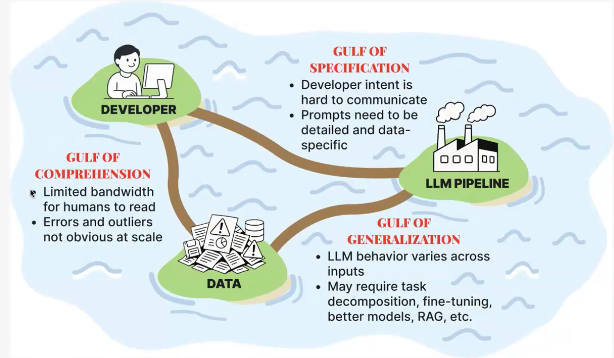
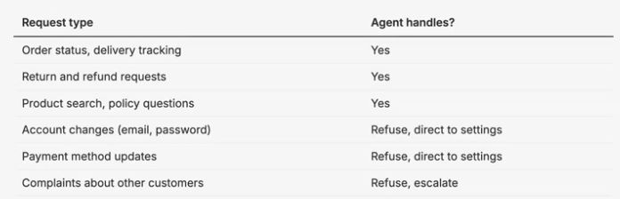
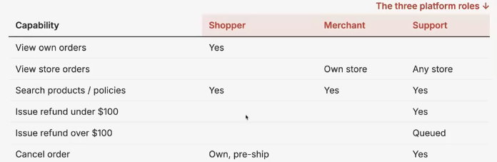
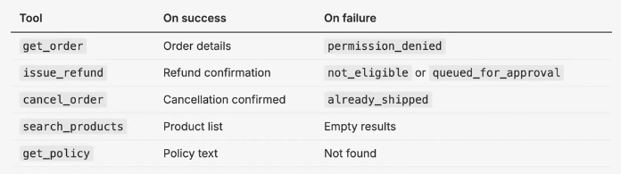
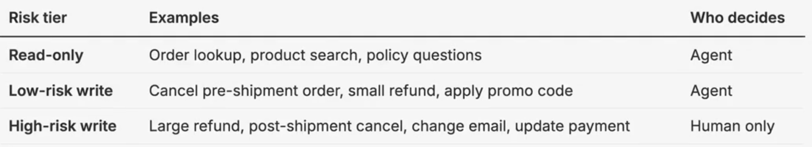

When developping an LLM system, everyone rushes to write the prompt and I think that’s the wrong place to start.
I wrote about LLM evals once before (Stop Vibe-Checking: Real-World Lessons on LLM Evals), back when I went through an earlier version of Hamel and Shreya’s course. The course has been reworked since then, so I’m going through it again. This time I’ll write one post per lecture instead of squeezing everything into a single post.
This is the first blog post in the serie. If you build agents and they keep surprising you once real users get their hands on them, then this whole serie is for you.
The 3 gulfs of agent development
The course frames the difficulty of building an LLM system as three gaps you have to cross. They call them the three gulfs of LLM systems development. I found the framing useful because it gives a structured way to look at the difficulties encountered when developping such systems, so let me walk through it.
Gulf of comprehension: This represents the gap between you and your data. Can you really understand every kind of query your system will get ? Not really. Real users can ask all kind of queries and you only have so much time to read through the queries users send and how your system responds. So, even when you try to test your system while building it, you’ll have a very hard time coming up with as diverse queries as real users will come up with.
Gulf of specification: This represents the gap between you and the LLM pipeline. When translating the specifications you want the model to follow in the prompt, you have to be specific, really really specific, and whatever you leave unsaid, the model fills in on its own, and not necessarily the way you had in mind. From first-hand experience, this is harder than it sounds even if it looks simple. Prompting using natural language is hard because it is not as specific as some other ways of writing specifications (for example, using programming languages)
Gulf of generalization: the gap between your data and the pipeline. You’ve built the agent and it works on your examples, but does it still work on the full range of messy inputs real users throw at it. The LLM performance will vary across tasks and user inputs. Getting this right can mean breaking the task into smaller steps, switching to a better model, adding retrieval, or fine-tuning.
In this post I’ll focus on the gulf of specification, because the way to deal with it is something a lot of people skip.

The Three Gulfs model, from Hamel Husain & Shreya Shankar’s LLM-evals course.Most prompts are written by an AI now, so write the spec first
Most prompts nowadays aren’t written by hand, word by word. People usually describe what they want in a prompt to an AI model and the model writes the prompt for them. So the part that’s really yours is not really the prompt anymore but the specs that will define the prompt.
So before you write the prompt, or before you ask a model to write it for you, sit down and write what your agent should and shouldn’t do. Be structured about it, and be as concrete as you can. The spec you’ll write is your source of truth. The prompt is just one way to express it.
A spec is just a structured document that says what the agent should and shouldn’t do. A good one usually has these sections:
- Purpose: a short paragraph on what the agent is for.
- Scope: which requests it handles and which it refuses.
- Roles and permissions: who can see and change what.
- Tools: what each tool does, and what it returns on success and on failure.
- Escalation: when the agent hands off to a human.
- Response requirements: everything else that doesn’t fit above, like tone, and rules such as citing a policy before making a claim.
Two things to keep in mind:
The spec is not going to be perfect, it’s really just a starting point resulting from some brainstorming. Take the time to do it but don’t dwell on it too much. You’ll get a chance to perfect the spec later when you build your evals and have interaction (synthetic or real-world) with the system.
The spec is not the prompt, but every rule in the spec should be fully covered by the prompt.
The lecture zooms in on four of these: scope, permissions, tool contracts, and escalation. Let me go through them, using an e-commerce customer-support agent as the example.
Writing a good spec
Scope: what does it handle, what does it refuse ?
Take the requests your system received over some period of time, group them into types, and for each type decide whether the agent should handle it or not. That’s the whole exercise. It looks boring, but that’s exactly what you want here. Here is what it looks like for the e-commerce agent:

Notice that the refusals are written down just as clearly as the things the agent does handle. If you leave a request type out, that’s usually where the agent starts improvising.
Permissions: who can see what, who can change what ?
Think about who’s going to use the system and what each of them is allowed to do. The same data can be fine for one role and off-limits for another. In the e-commerce example there are three roles: shopper, merchant, and support.

Writing this table forces you to answer questions the prompt would otherwise answer on its own, silently. Can a merchant see another store’s orders ? No. And now it’s written down instead of left to the model’s judgment.
Tool contracts: what comes back on success, and on failure ?
Look at what your users already do today without any AI, the actions they take in the current system, and turn those into tools. But don’t only think about the happy path. For each tool, decide what it returns when it works and what it returns when it fails.
Specifying the returns in case of failures is important and doesn’t leave the return open to interpretation by a model. An empty list output by a tool might mean that a failure occured when fetching the results or just that the real result is empty. Also, returning not_eligible versus queued_for_approval completely changes what the agent should say to the customer.
Adapting the return type to your tool and specifying it in case of success and failure are both very important.

If I had to pick one thing to remember from this lecture, it’s this: the failure messages matter as much as the success ones. If you don’t tell the agent why something failed, you leave it to guess, and it will guess wrong.
Escalation: when does it hand off to a human ?
The question here is simple. If the agent gets it wrong, how much does it cost ? The cost of the mistake tells you who’s allowed to make the call and if escalation to human is necessary.

Your spec won’t be perfect, and that’s ok
One warning before you get carried away. Don’t take all of this and go spend two weeks writing the perfect spec that covers every case. You’ll waste a lot of time and still not get there, because you can’t. You simply can’t think of every request type and every edge case up front. That’s the gulf of comprehension again, showing up in practice.
So treat the spec as a first draft, not a finished document. A best-effort version is enough to get started. The real improvements come later, once the system is running and you start looking at where it goes wrong. That’s when the cases you never thought of show up.
And how to find those cases in a systematic way, instead of stumbling on them by accident, is exactly what some of the next lectures are about. You can take a look at my previous post if you’re curious about how to do it: Stop Vibe-Checking: Real-World Lessons on LLM Evals
Now look at a real specification file
The tables above are the teaching version, kept small on purpose so the idea is easy to see. A real spec can get (but not necessarily) bigger and messier than that. The course comes with a project, a support agent for a fictional store called Cartwheel, and its spec is public.
I’d read it in full (SPEC.md). It has the same sections we just went through, purpose, scope, roles and permissions, tools with their success and failure contracts, escalation, and a section of general response requirements, but with a lot more detail.
A few lessons I took from reading it:
Give every requirement an ID. Scope rules are
SCOPE-1andSCOPE-2, permission rules sit underAUTH-1, escalation rules areESC-1toESC-4, and so on. This structure really pays off later. When you find a failure you can point at the exact rule it broke, and when you write a test you can say which rule that test is checking.Write down the boring response rules too. Beyond the four components above, the spec keeps a list of general response requirements: cite the policy identifier for every claim that comes from a policy document, don’t say an action succeeded before the tool reports success, say when information is missing instead of inventing a value, and explain refusals without leaking data the user isn’t allowed to see. These are easy to forget and annoying to debug later, which is exactly why they belong in the spec.
Wrapping up
The main idea from this first lecture is simple: write the spec before the prompt, and structure it around scope, permissions, tool contracts, and escalation. And don’t obsess over making it perfect, because it isn’t supposed to be.
As always, all the credit for the material goes to Hamel Husain and Shreya Shankar. If you or your company can afford it, their course on LLM evals is really worth it.
This series is just my notes from going through it, one lecture at a time